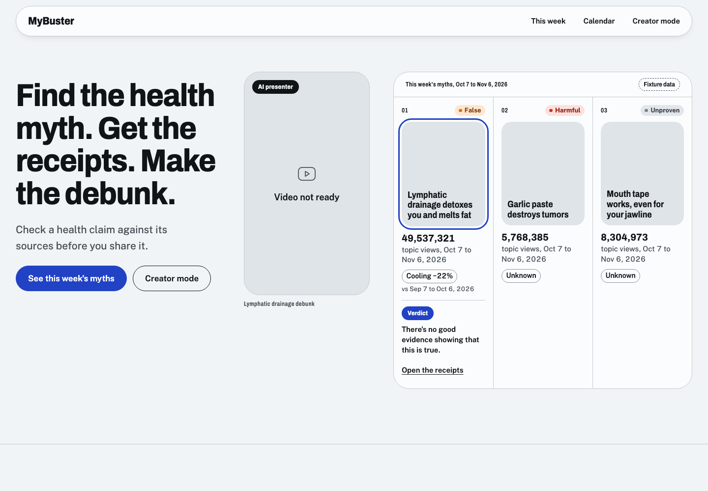
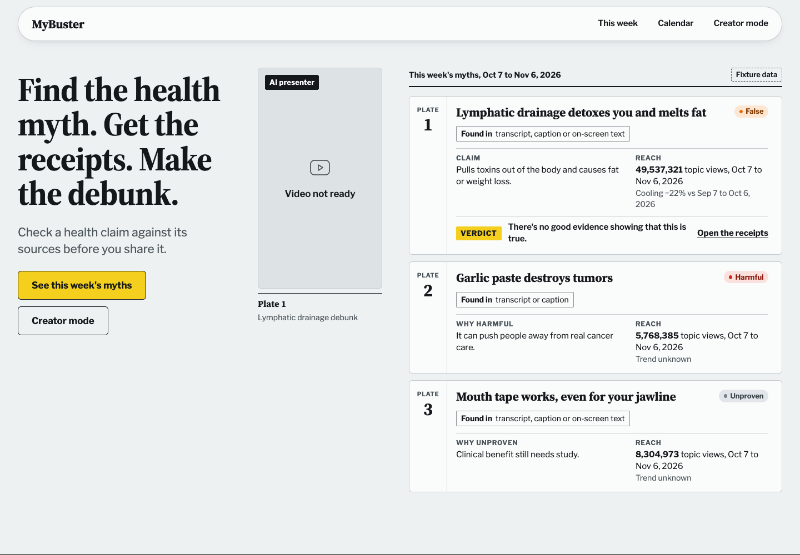
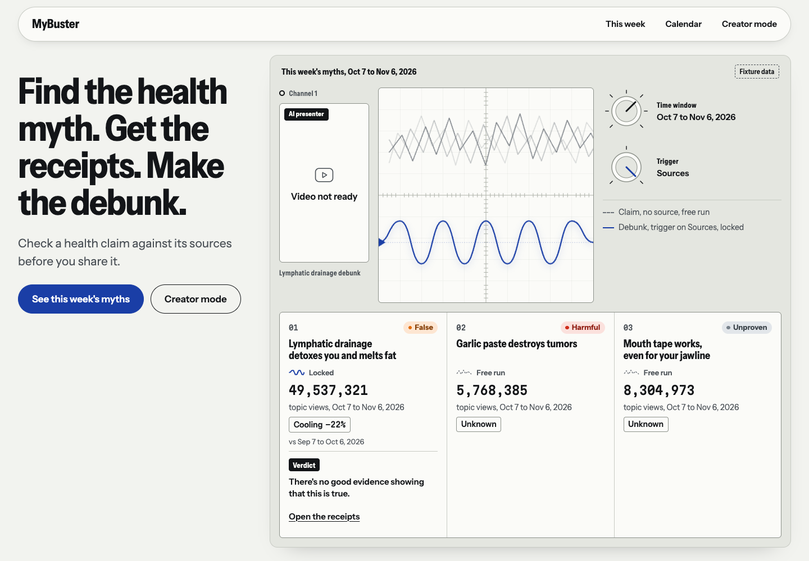

Proof sheet
Default if you don't choose
Myths sit as frames on a photo contact sheet. Verdicts are grease-pencil marks.
Open the proof sheetThree prototypes of the same landing, with the same copy and fixture data. Open each one, then tell me which to build out.

Default if you don't choose
Myths sit as frames on a photo contact sheet. Verdicts are grease-pencil marks.
Open the proof sheet
Impeccable's pick
Each myth is a specimen plate with its traits and a verdict tag. Risk: the nature-guide tone can read as twee.
Open the field guide
Strongest challenger
A claim is a trace that locks only when a source triggers it. The cyber creator is the signal. Translated from dark CRT glass to light paper.
Open the signal benchThe thumbnails were taken before the latest copy fixes, so their heading, badge, and trend wording differ. Open each live page for current copy. The category standard, the safe health-news layout, is available on request.